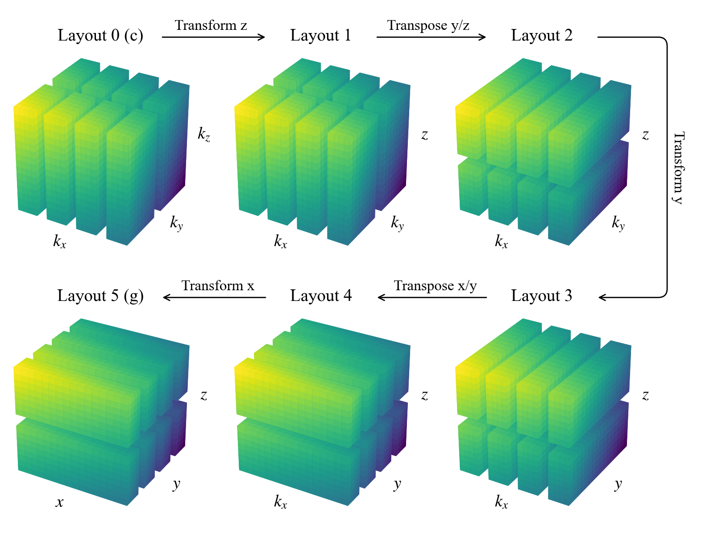
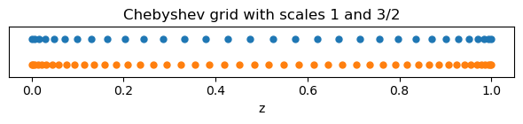
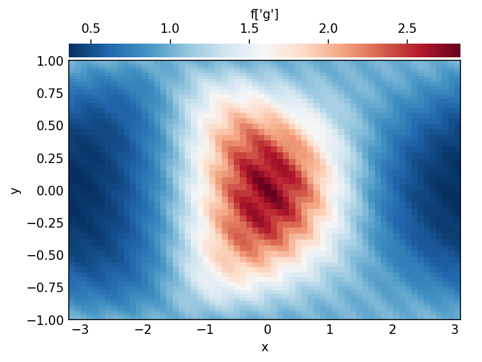
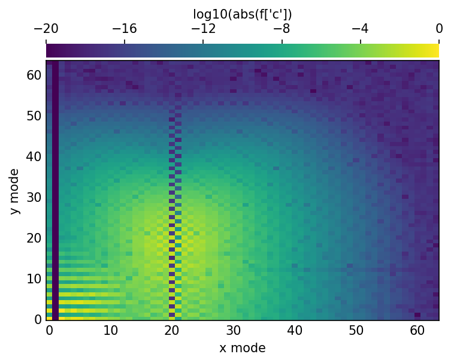
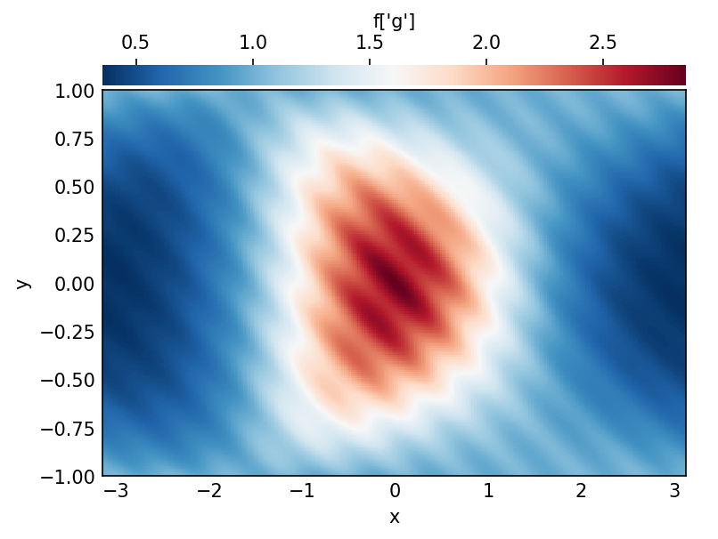
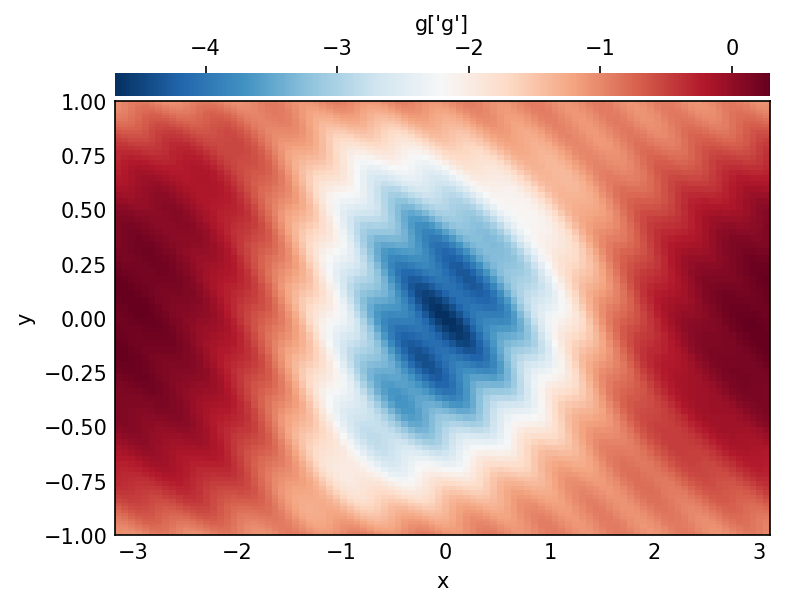
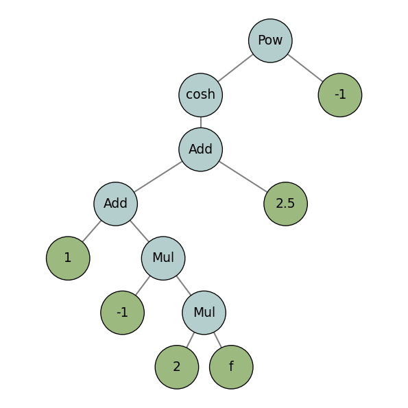
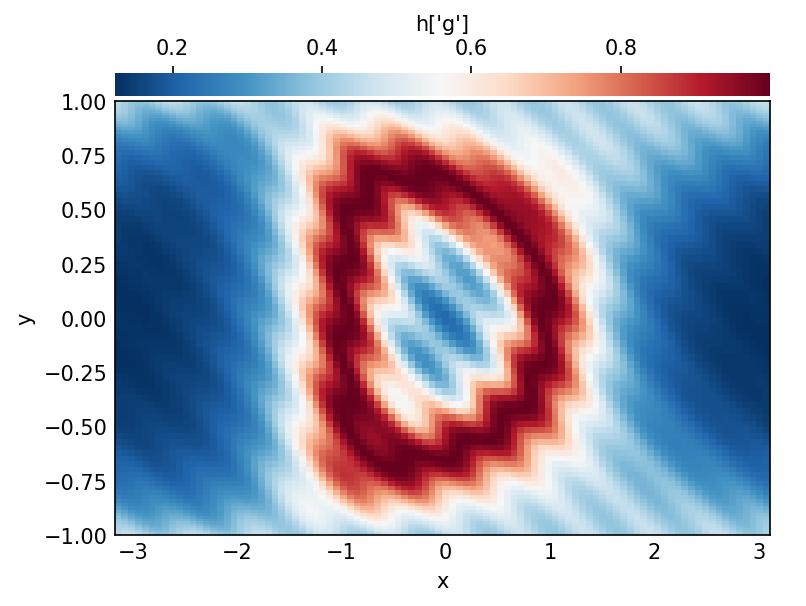
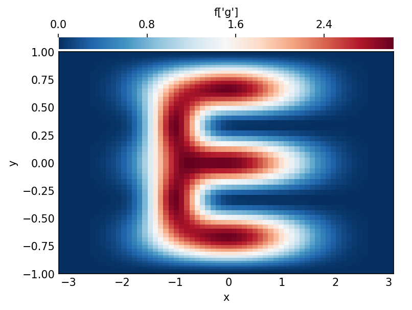
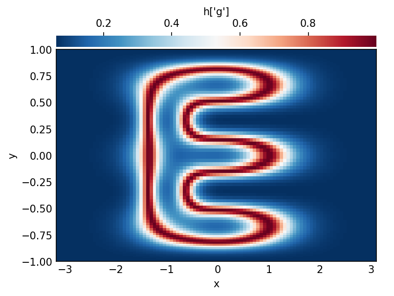

import numpy as np
import matplotlib.pyplot as plt
import dedalus.public as d3Coordinates
DEDALUS
Dedalus solves differential equations using spectral methods. It’s open-source, written in Python, and MPI-parallelized

Coordinates, Distributors, and Bases
This tutorial walks through the basics of setting up and using coordinate, distributor, and basis objects in Dedalus. In Dedalus, we represent fields and solve PDEs using spectral discretizations. To set these up, we choose spectral bases for the spatial coordinates in the problem. Once the coordinates are defined, they are collected into a distributor object, which takes care of how fields and problems are split up and distributed in parallel
In Dedalus, the spatial coordinates of a PDE are represented by coordinate objects. For simple 1D problems, you can define a coordinate directly using the Coordinate class. For higher-dimensional problems, you’ll usually combine multiple coordinates into a CoordinateSystem.
Dedalus currently includes several built-in coordinate systems:
CartesianCoordinates: works in any number of dimensionsPolarCoordinates: with azimuth and radiusS2Coordinates: with azimuth and colatitudeSphericalCoordinates: with azimuth, colatitude, and radius
When you create a CoordinateSystem, you just provide the names you’d like to use for each coordinate, in the order shown above. For example, let’s walk through how to set up a problem in 3D Cartesian coordinates
coords = d3.CartesianCoordinates('x', 'y', 'z')Distributors
A distributor object handles the parallel decomposition of fields and problems. Every problem in Dedalus needs a distributor, even if you’re just running in serial.
To create a distributor, you provide the coordinate system for your PDE, specify the datatype of the fields you’ll be working with, and, if needed, supply a process mesh to control parallelization
# No mesh for serial / automatic parallelization
dist = d3.Distributor(coords, dtype=np.float64) Parallelization & process meshes
When you run Dedalus under MPI, it parallelizes computations using block-distributed domain decompositions. By default, Dedalus spreads the work across a 1-dimensional mesh of all available MPI processes—this is called a “slab” decomposition. If you want more flexibility, you can specify a custom process mesh with the mesh keyword when creating a domain. This allows “pencil” decompositions, where the domain is split along more than one direction. Just keep in mind that the total number of MPI processes must match the product of the mesh shape you provide
There’s also an important restriction: the mesh dimension can’t be larger than the number of separable coordinates in the linear part of your PDE. In practice, this usually means you can parallelize over periodic or angular coordinates. For fully separable problems—like a fully periodic box or a simulation on the sphere—the mesh dimension must be strictly less than the total dimension
Layouts
The distributor object sets up the machinery needed to allocate and transform fields in parallel. A key part of this is an ordered set of Layout objects, which describe how the data should be represented and distributed as it moves between coefficient space and grid space. Moving from one layout to another involves two types of operations: spectral transforms (done locally) and global transposes (which shuffle data across the process mesh to put it in the right place)
The basic algorithm works like this:
- We start in coefficient space (layout 0), where the last axis is local (not distributed)
- Then we transform that last axis into grid space (layout 1)
- If needed, we perform a global transpose so that the next axis becomes local, and transform that axis into grid space
- This process repeats until all axes have been transformed into grid space (the final layout)
Let’s take a look at the layouts for the domain we just built. Since this is a serial computation, no global transposes are required—all axes are already local. So the layout transitions are just coefficient-to-grid transforms, working backwards from the last axis
for layout in dist.layouts:
print(f'Layout {layout.index}: Grid space: {layout.grid_space} Local: {layout.local}')Layout 0: Grid space: [False False False] Local: [ True True True]
Layout 1: Grid space: [False False True] Local: [ True True True]
Layout 2: Grid space: [False True True] Local: [ True True True]
Layout 3: Grid space: [ True True True] Local: [ True True True]To get a sense of how things work in a distributed simulation, we’ll change the process mesh shape and rebuild the layout objects. For this example, we’ll bypass the usual internal checks on the number of available processes and related settings, just so we can see how the layouts are constructed in a parallel setup
# Don't do this. For illustration only
dist.mesh = np.array([4, 2])
dist.comm_coords = np.array([0, 0])
dist._build_layouts(dry_run=True)for layout in dist.layouts:
print(f'Layout {layout.index}: Grid space: {layout.grid_space} Local: {layout.local}')Layout 0: Grid space: [False False False] Local: [False False True]
Layout 1: Grid space: [False False True] Local: [False False True]
Layout 2: Grid space: [False False True] Local: [False True False]
Layout 3: Grid space: [False True True] Local: [False True False]
Layout 4: Grid space: [False True True] Local: [ True False False]
Layout 5: Grid space: [ True True True] Local: [ True False False]We can see that there are now two additional layouts, corresponding to the transposed states of the mixed-transform layouts. Two global transposes are necessary here in order for the \(x\) and \(y\) axes to be stored locally, which is required to perform the respective spectral transforms. Here’s a sketch of the data distribution in the different layouts:

In most cases, you won’t need to interact with layout objects directly. However, it’s useful to understand this system, since it controls how data is distributed and transformed. Being aware of it will help when working with field objects, as we’ll see in later sections
Bases
Creating a basis
Each type of basis in Dedalus is represented by a separate class. These classes define the corresponding spectral operators as well as transforms between the “grid space” and “coefficient space” representations of functions in that basis. The most commonly used bases are:
RealFourierfor real periodic functions on an interval using cosine & sine modesComplexFourierfor complex periodic functions on an interval using complex exponentialsChebyshevfor functions on an intervalJacobifor functions on an interval under a more general inner product (usuallyChebyshevis best for performance)DiskBasisfor functions on a full disk in polar coordinatesAnnulusBasisfor functions on an annulus in polar coordinatesSphereBasisfor functions on the 2-sphere in S2 or spherical coordinatesBallBasisfor functions on a full ball in spherical coordinatesShellBasisfor functions on a spherical shell in spherical coordinates
For one-dimensional or Cartesian bases, you create a basis by specifying:
- the corresponding coordinate object
- the number of modes for the basis
- the coordinate bounds of the basis interval
For multidimensional or curvilinear bases, you provide:
- the corresponding coordinate system
- the multidimensional mode shape for the basis
- the radial extent of the basis
- the data type (dtype) for the problem
Optionally, for any basis, you can also specify dealiasing scale factors for each axis. These factors control how much to pad the modes when transforming to grid space. For example, to properly dealias quadratic nonlinearities, you would typically use a scaling factor of 3/2
xbasis = d3.RealFourier(coords['x'], size=32, bounds=(0,1), dealias=3/2)
ybasis = d3.RealFourier(coords['y'], size=32, bounds=(0,1), dealias=3/2)
zbasis = d3.Chebyshev(coords['z'], size=32, bounds=(0,1), dealias=3/2)Some bases also accept additional arguments that let you tweak their internal behavior. For more details, check the basis.py API documentation
Basis grids and scale factors
Each basis comes with a corresponding coordinate or collocation grid—or multiple grids for multidimensional bases. These grids are useful for tasks like initializing and plotting fields
You can access the global (non-distributed) grids using the basis object’s global_grid method (or global_grids for multidimensional bases). These methods also allow you to provide scale factors, which control how many points are included in the grid relative to the number of basis modes
For example, let’s take a look at Chebyshev grids with scaling factors of 1 and 3/2
grid_normal = zbasis.global_grid(dist, scale=1).ravel()
grid_dealias = zbasis.global_grid(dist, scale=3/2).ravel()
plt.figure(figsize=(6, 1.5), dpi=100)
plt.plot(grid_normal, 0*grid_normal +1, 'o', markersize=5)
plt.plot(grid_dealias, 0*grid_dealias -1, 'o', markersize=5)
plt.xlabel('z')
plt.title('Chebyshev grid with scales 1 and 3/2')
plt.ylim([-2, 2])
plt.gca().yaxis.set_ticks([]);
plt.tight_layout()
Note that Chebyshev grids are non-equispaced: the points cluster quadratically near the ends of the interval. This behavior is especially useful for resolving sharp features, such as boundary layers
Distributed grid and element arrays
To make it easier to create field data, the distributor provides the local portions of the coordinate grids and mode numbers (wavenumbers or polynomial degrees). You can access the local grids—which are distributed according to the last layout or the full “grid space”—using the dist.local_grid method (or dist.local_grids for multidimensional bases)
When calling these methods, you need to specify the basis and optionally a scale factor (which defaults to 1)
local_x = dist.local_grid(xbasis)
local_y = dist.local_grid(ybasis)
local_z = dist.local_grid(zbasis)
print('Local x shape:', local_x.shape)
print('Local y shape:', local_y.shape)
print('Local z shape:', local_z.shape)Local x shape: (32, 1, 1)
Local y shape: (1, 8, 1)
Local z shape: (1, 1, 16)The local x grid corresponds to the full Fourier grid for the x-basis and is the same on all processes, because the first axis is local in grid space
The local y and local z grids, on the other hand, usually differ across processes. These grids contain only the local portions of the y and z basis grids, distributed according to the process mesh—for example, 4 blocks in y and 2 blocks in z
You can access the local modes—which are distributed according to layout 0 (the full “coefficient space”)—using the dist.local_modes method. When calling this method, you just need to specify the basis
local_kx = dist.local_modes(xbasis)
local_ky = dist.local_modes(ybasis)
local_nz = dist.local_modes(zbasis)
print('Local kx shape:', local_kx.shape)
print('Local ky shape:', local_ky.shape)
print('Local nz shape:', local_nz.shape)Local kx shape: (8, 1, 1)
Local ky shape: (1, 16, 1)
Local nz shape: (1, 1, 32)The local kx and local ky arrays now differ across processes, because they contain only the local portions of the x and y wavenumbers, which are distributed in coefficient space
The local nz array, on the other hand, includes the full set of Chebyshev modes, which are always local in coefficient space
These local arrays can be used to create parallel-safe initial conditions for fields, either in grid space or coefficient space, as we’ll explore in the next section
Fields and Operators
This tutorial covers the basics of setting up and working with field and operator objects in Dedalus. Dedalus uses these abstractions to implement a symbolic algebra system, which allows us to represent mathematical expressions and PDEs in a convenient and flexible way
import numpy as np
import matplotlib.pyplot as plt
import dedalus.public as d3
from dedalus.extras.plot_tools import plot_bot_2d
figkw = {'figsize': (6, 4), 'dpi': 150}Fields
Creating a field
In Dedalus, field objects represent scalar-valued fields defined over a set of bases (or a “domain”). You can create a field directly from the Field class by providing a distributor, a list of bases, and, optionally, a name
Alternatively, you can create a field using the dist.Field method
Let’s try setting up a 2D domain and building a field
coords = d3.CartesianCoordinates('x', 'y')
dist = d3.Distributor(coords, dtype=np.float64)
xbasis = d3.RealFourier(coords['x'], 64, bounds=(-np.pi, np.pi), dealias=3/2)
ybasis = d3.Chebyshev(coords['y'], 64, bounds=(-1, 1), dealias=3/2)
f = dist.Field(name='f', bases=(xbasis, ybasis))This field \(f\) depends on both \(x\) and \(y\), since it is defined using both xbasis and ybasis
If you want to create a field that depends on only \(x\) or only \(y\), you can pass bases=xbasis or bases=ybasis, respectively.
To create a spatially constant field—one that does not vary with \(x\) or \(y\)—simply do not provide any bases
Vector and tensor fields
By default, the Field class creates a scalar-valued field, which can also be instantiated using the ScalarField constructor
If you want a vector-valued field, use the VectorField constructor and provide the coordinate system corresponding to the components of the vector. Technically, this is specifying the vector bundle of the field to be the tangent bundle on the chosen coordinate system
Similarly, you can create arbitrary-order tensor fields using the TensorField constructor by passing a tuple of coordinate systems. This defines the tensor bundle of the field
Note: the bases of a field describe its spatial variation, while the vector/tensor bundle describes the components of the field. For example, you could have a 2D vector with \(x\) and \(y\) components that varies only along the \(x\) direction—so it would only need an \(x\) basis
Let’s go ahead and build such a vector field on our domain
u = dist.VectorField(coords, name='u', bases=xbasis)Manipulating field data
Field objects provide several methods for transforming their data between different layouts—this includes grid space, coefficient space, and all intermediate layouts
Each field has a layout attribute, which points to the layout object describing its current transform and distribution state
By default, fields are instantiated in coefficient space
f.layout.grid_spacearray([False, False])You can assign and retrieve field data in any layout by indexing a field with that layout object. In most cases, you won’t need the mixed layouts—the full grid and full coefficient layouts are usually enough. You can also use the shortcuts ‘g’ and ‘c’ to access these layouts easily
When working in parallel, each process only manipulates its local portion of the globally distributed data. This means you can safely set a field’s grid data in a parallel-safe way using the local grids provided by the domain
x = dist.local_grid(xbasis)
y = dist.local_grid(ybasis)
f['g'] = np.exp((1 -y**2) *np.cos(x +np.cos(x) *y**2)) *(1 +0.05 *np.cos(10 *(x +2 *y)))
# Plot grid values
plot_bot_2d(f, figkw=figkw, title="f['g']");
You can convert a field to spectral coefficients by accessing its data in coefficient space. Internally, this triggers an in-place multidimensional spectral transform on the field’s data
f['c']
# Plot log magnitude of spectral coefficients
log_mag = lambda xmesh, ymesh, data: (xmesh, ymesh, np.log10(np.abs(data) +1.e-20))
plot_bot_2d(f, func=log_mag, clim=(-20, 0), cmap='viridis', title="log10(abs(f['c'])", figkw=figkw);
Examining the spectral coefficients of a field is very useful, because the amplitude of the highest modes indicates the truncation errors in the spectral discretization
If the amplitudes of these modes are small, as in this example, we can conclude that the field is well-resolved
Vector and tensor components
In Dedalus, when you build a VectorField or TensorField, the first axes of the data array always correspond to the field’s components, and the remaining axes correspond to the bases (spatial discretization)
u['g'].shape(2, 64, 1)Vector and Tensor Field Data Shapes
- The first axis of the data array corresponds to the field’s components
- For example, in a 2D Cartesian vector field, this axis has size 2, representing the \(x\)- and \(y\)-components
- The remaining axes correspond to the physical shape of the domain
- In our example, the field is constant along the \(y\)-direction, since it was only defined with an \(x\)-basis
Grid Space vs. Coefficient Space
- In grid space, vector and tensor components align with the unit vectors of the tangent space (e.g., \(\hat{x}\), \(\hat{y}\) in Cartesian coordinates)
- In coefficient space, the same is true for Cartesian domains
- However, in curvilinear domains (polar, spherical, etc.), the components may be recombined during spectral transforms, making the coefficient-space data harder to interpret component-wise
Practical Tip
Because of this, it’s generally recommended to initialize vector and tensor fields in grid space, where the components correspond directly to the familiar unit vectors
Field scale factors
Changing Field Resolution with change_scales
- The
change_scalesmethod on a field lets you modify the scaling factors used when transforming the field’s data into grid space - If you set field data using grid arrays, make sure the field and grid use the same scale factors, otherwise you’ll get shape errors
Practical Uses
- Large scale factors ($ > 1$): Interpolate the field data onto a higher-resolution grid
- Small scale factors ($ < 1$): View the field on a lower-resolution grid
- But beware: if the scale factor is less than 1, you’ll actually lose data during the transform to grid space
High-Resolution Sampling with change_scales
We can sample a field on a higher-resolution grid by increasing its scale factors using the change_scales method. This effectively interpolates the field data, giving us a finer view of its structure in grid space
f.change_scales(4)
# Plot grid values
f['g']
plot_bot_2d(f, title="f['g']", figkw=figkw);
Scale Factors in Data Access
Scale factors can also be passed as a second argument when setting or retrieving field data through the __getitem__ / __setitem__ interface:
field['g', 2]→ get the grid-space data at 2× resolutionfield['g', 0.5]→ get the grid-space data at half resolutionfield['g', 2]= … → set the grid-space data at 2× resolution
This provides a convenient way to work with data at different resolutions without calling change_scales explicitly
print(f['g', 1].shape)
print(f['g', 2].shape)(64, 64)
(128, 128)Operators
Arithmetic with fields
Operator Classes
- In
Dedalus, mathematical operations on fields—such as arithmetic, differentiation, integration, and interpolation—are represented byOperatorclasses - An operator instance corresponds to a specific mathematical expression
- Operators provide an interface for deferred evaluation, meaning the expression is stored symbolically and can be evaluated later, even if its arguments evolve over time
Arithmetic Operators
Dedaluslets you write arithmetic operations between fields (or between fields and scalars) using Python’s infix operators (+, -, *, /, **)- This makes expressions look natural, just like standard math notation
g_op = 1 -2 *f
print(g_op)C(C(1)) + -1*2*fOperator Objects and Evaluation
- When we perform arithmetic with fields, the result is not a field, but an operator object
- For example, the expression might symbolically represent “add 1 to the product of -1, 2, and our field”
- To actually compute the operation, we call the operator’s
.evaluate()method - This returns a new field containing the numerical result
- Important: the dealiasing scale factors set when the basis was instantiated are always applied during operator evaluation
g = g_op.evaluate()
# Plot grid values
g['g']
plot_bot_2d(g, title="g['g']", figkw=figkw);
Building expressions
Building Expression Trees
Operatorinstances can themselves be passed as arguments to other operators- This allows us to build expression trees that represent more complicated mathematical formulas in a natural, symbolic way
h_op = 1 /np.cosh(g_op +2.5)
print(h_op)Pow(cosh(C(C(1)) + -1*2*f + C(C(2.5))), -1)Visualizing Operator Structures
Operatorsignatures can become hard to read when expressions get complicated- To make this easier,
Dedalusprovides a helper indedalus.toolsthat lets us plot the operator’s structure - This visualization shows the tree of operations (e.g. additions, multiplications, derivatives), making it clear how the overall expression is built
from dedalus.tools.plot_op import plot_operator
plot_operator(h_op, figsize=6, fontsize=14, opsize=0.4)
Evaluating Operators
- Once an operator is constructed (even a complex expression tree), you can evaluate it to get a field containing the result
- This is done using the
.evaluate()method of the operator
h = h_op.evaluate()
# Plot grid values
h['g']
plot_bot_2d(h, title="h['g']", figkw=figkw);
Deferred evaluation
Deferred Evaluation with Operators
Operatorobjects inDedalussymbolically represent an operation on their field arguments- They use deferred evaluation, meaning the operation is not computed immediately
- If the data of the field arguments changes, re-evaluating the operator with
.evaluate()produces a new result that reflects the updated field data
💡 Key insight: This allows you to reuse the same operator object on different field states, which is especially useful in time-dependent simulations where fields evolve over time
# Change scales back to 1 to build new grid data
f.change_scales(1)
f['g'] = 3 *np.cos(1.5 *np.pi *y)**2 *np.cos(x /2)**4 +3 *np.exp(-((2 *x +2)**2 +(4 *y +4 /3)**2)) +3 *np.exp(-((2 *x +2)**2 + (4 *y -4 /3)**2))
# Plot grid values
f['g']
plot_bot_2d(f, title="f['g']", figkw=figkw);
h = h_op.evaluate()
# Plot grid values
h['g']
plot_bot_2d(h, title="h['g']", figkw=figkw);
Differential operators
- In
Dedalus, operators are also used to compute derivatives of fields - For one-dimensional bases, partial derivatives are implemented using the
Differentiateoperator - To compute a derivative, you specify the coordinate with respect to which you want to differentiate
fx = d3.Differentiate(f, coords['x'])Vector Calculus Operators in Dedalus
For multidimensional problems, Dedalus provides built-in vector calculus operators:
| Operator | Applicable Fields | Description |
|---|---|---|
Gradient |
Arbitrary fields | Computes the gradient of a scalar or vector field |
Divergence |
Vector or tensor fields | Computes the divergence |
Curl |
Vector fields | Computes the curl |
Laplacian |
Arbitrary fields | Computes the Laplacian, defined as the divergence of the gradient |
- These operators return operator objects that can be evaluated to produce fields with the computed results
- They provide a high-level, symbolic interface for common PDE operations, simplifying multidimensional derivations
Optional Arguments for Vector Calculus Operators
- A coordinate system can optionally be specified as the tangent bundle for the
GradientandLaplacianoperators.- If not provided, they default to the distributor’s coordinate system
- A tensor index can optionally be specified for the
Divergenceoperator- Defaults to
0if not provided.
- Defaults to
- Tensor ranks propagate naturally:
- The gradient of a rank-0 (scalar) field is rank-1 (vector)
- The gradient of a rank-1 (vector) field is rank-2 (tensor), and so on
lap_f = d3.Laplacian(f).evaluate()
grad_f = d3.Gradient(f).evaluate()
print('f shape:', f['g'].shape)
print('Grad(f) shape:', grad_f['g'].shape)
print('Lap(f) shape:', lap_f['g'].shape)
div_grad_f = d3.Divergence(d3.Gradient(f)).evaluate()
print('Lap(f) is Div(Grad(f)):', np.allclose(lap_f['g'], div_grad_f['g']))f shape: (96, 96)
Grad(f) shape: (2, 96, 96)
Lap(f) shape: (96, 96)
Lap(f) is Div(Grad(f)): TrueTensor operators
Operators for Tensor Field Components
Dedalus provides several operators specifically for manipulating components of tensor fields:
| Operator | Description |
|---|---|
Trace |
Contracts two specified indices of a tensor (defaults to indices 0 and 1) |
TransposeComponents |
Swaps two specified indices of a tensor (defaults to indices 0 and 1) |
Skew |
Applies a 90-degree positive rotation to 2D vector fields |
grad_u = d3.Gradient(u)
transpose_grad_u = d3.TransposeComponents(grad_u)Integrals and acerage
Integrals and Averages
Dedalusprovides operators for computing integrals and averages of scalar fields:
| Operator | Description |
|---|---|
Integrate |
Computes the integral of a scalar field over specified coordinates or a coordinate system |
Average |
Computes the average of a scalar field over specified coordinates or a coordinate system |
# Total integral of the field
f_int = d3.Integrate(f, ('x', 'y'))
print('f integral:', f_int.evaluate()['g'])
# Average of the field
f_ave = d3.Average(f, ('x', 'y'))
print('f average:', f_ave.evaluate()['g'])f integral: [[9.42458659]]
f average: [[0.74998477]]Interpolation
Interpolation
Dedalusprovides theInterpolateoperator for interpolating field data along a coordinateInterpolation can also be done using the
__call__method on fields or operators, with keywords specifying the coordinate and positionFor convenience, the strings
'left','right', and'center'can be used to refer to the endpoints and middle of 1D intervals
f00 = f(x=0, y=0)
print('f(0,0):', f00.evaluate()['g'])f(0,0): [[3.01857352]]